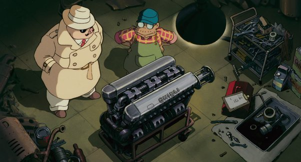
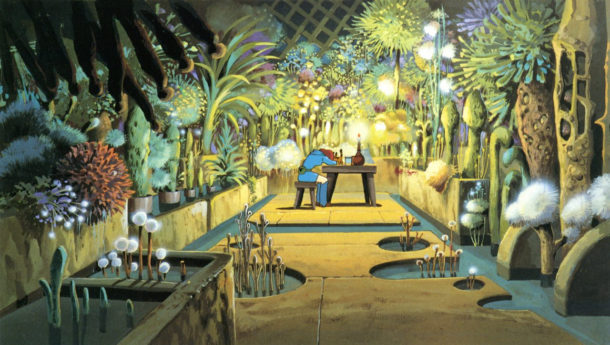
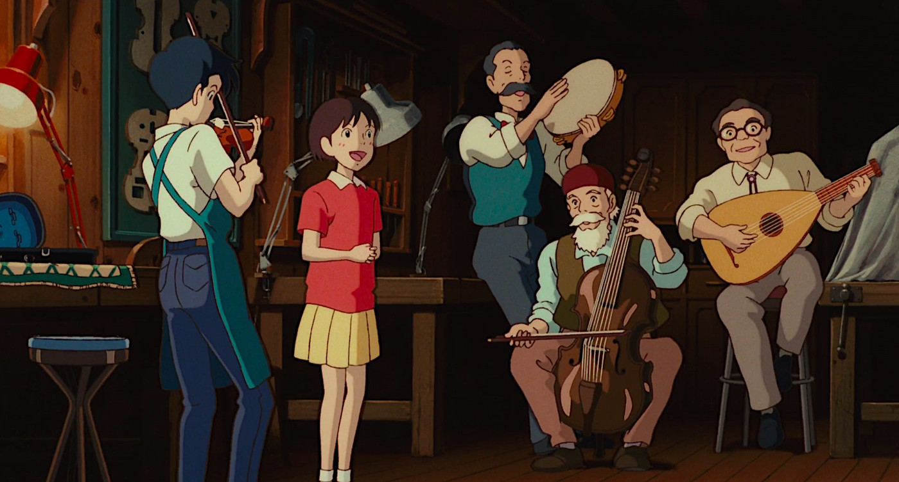

Tecnicas e influencia
Studio Ghibli se ha convertido en un referente indiscutible en la industria de la animación japonesa. Fundado en 1985 por el director Hayao Miyazaki, Isao Takahata y el productor Toshio Suzuki, el estudio ha producido algunas de las películas más icónicas de la animación japonesa. La influencia del Studio Ghibli en la animación japonesa contemporánea es evidente en las producciones más recientes, tanto en estética como en contenido. En este artículo, exploraremos cómo Studio Ghibli ha influido en la animación japonesa contemporánea.

Estilo visual y técnica de animación
Una de las mayores influencias de Studio Ghibli es en el estilo visual de la animación japonesa contemporánea. Las películas de Ghibli se caracterizan por sus impresionantes paisajes, personajes expresivos y una técnica de animación detallada y cuidada en cada fotograma. Además, el estudio japonés utilizó una técnica de animación tradicional, basada en la animación con cels. Esta técnica consiste en dibujar, pintar y recortar cada elemento de la animación, para luego filmarlo en una secuencia de imágenes. Aunque esta técnica es más costosa y requiere de un trabajo minucioso, ha resultado ser altamente efectiva en la creación de películas de calidad. Muchos estudios de animación japonesa contemporáneos han seguido la estética de Ghibli en cuanto a la animación tradicional con gran detalle. El resultado es una animación más fluida y realista que se ha convertido en el sello de muchos animes recientes, como “Your Lie in April” y “K-On!”.

Bandas sonoras memorables
La música ha sido una parte integral de las películas de Studio Ghibli desde el principio. La música de la famosa compositora Joe Hisaishi ha sido un componente vital de la estética de Ghibli, siendo considerada como uno de los mayores activos del estudio. La influencia musical de Ghibli en la animación japonesa contemporánea se ve claramente en el énfasis puesto en bandas sonoras memorables. Los animes más recientes también se han preocupado por la música, y han trabajado con compositores destacados para crear bandas sonoras que se adapten a la serie. Un ejemplo claro es la serie “Demon Slayer”, que ha contado con la colaboración del compositor Yuki Kajiura, y ha recibido críticas positivas por su música.
